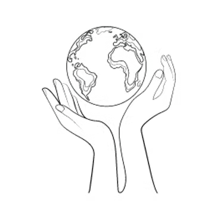

Thanks for Visiting Youthlinc Webpage. We are glad to continue helping people every dayx
Our Programs:
- Service Year
- RootEd Global
- Real Live
- Young Humanitarian Award
Our mission is to create lifetime humanitarians. Youthlinc invests in the service ethic of youth in order to foster individuals in our society who understand local and global needs, and who are deeply committed to work to relieve those needs through personal service, partnership, and good will.
Our purpose is focused on creating lifetime humanitarians. Youthlinc is an organization focused on making lasting and sustainable changes. This means that change is effective and long lasting. Through intentional work and preparation, this is made possible.
Youthlinc partners with local NGO’s and Rotary clubs in-country to ensure our work will benefit the overall community in a positive way. Before Youthlinc sends a team to a country, we send a staff member to conduct an initial evaluation to ensure safety and and a positive, mutually beneficial partnership.
Local Service
International Service
